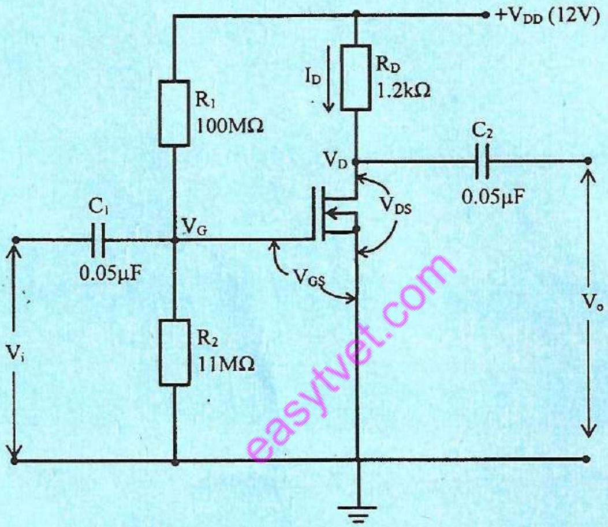
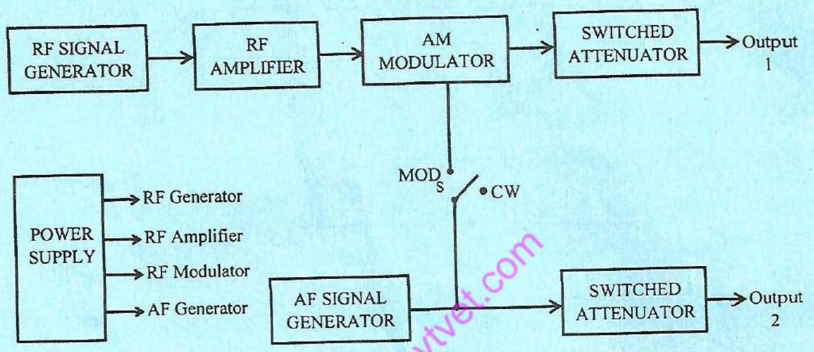
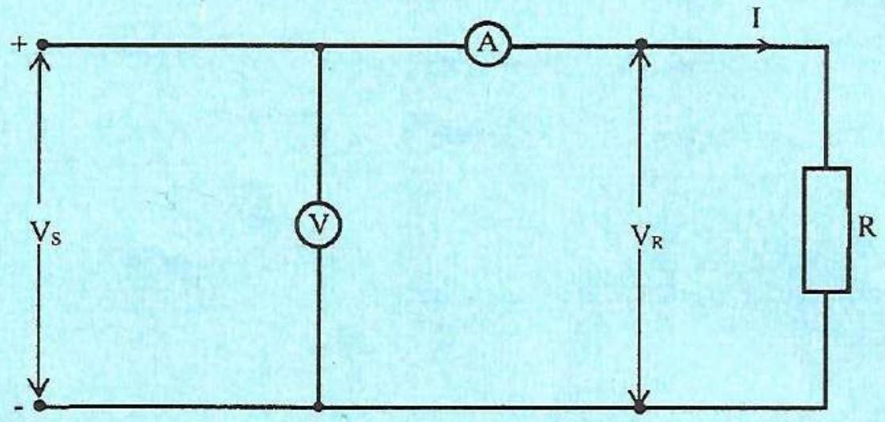

Instructions to Candidates
- This paper consists of SIX questions.
- Answer any FOUR questions.
- All questions carry equal marks.
- Write your answers in the answer booklet provided.
Question 1
(a) Define each of the following with respect to measurements:
(i) resolution;
(ii) dimensions.
(b) Derive, from first principles, the dimensional equation for capacitance in c.g.s electrostatic units.
(c) (i) State the units for each of the following electrical quantities:
I. electric flux density;
II. electric field strength;
III. magnetomotive force.
(ii) Write down the physical equations for each of the following mechanical quantities:
I. momentum;
II. torque;
III. stiffness.
Answer
This question requires defining measurement terms, deriving a dimensional equation, stating units for electrical quantities, and writing physical equations for mechanical quantities.
(a) (i) Resolution: The smallest change in a measured value that can be detected by the instrument.
(ii) Dimensions: Fundamental physical quantities that define the nature of a measurement, such as length, mass, time, and charge.
(b) The dimensional equation for capacitance in c.g.s electrostatic units can be derived as follows:
Capacitance (C) is defined as the ratio of charge (Q) to potential difference (V):
C = Q/V
In c.g.s electrostatic units:
Charge (Q) has dimensions of [L^(1/2) M^(1/2)]
Potential difference (V) has dimensions of [L^(1/2) M^(1/2) T^(-2)]
Therefore, capacitance (C) has dimensions of:
C = [L^(1/2) M^(1/2)] / [L^(1/2) M^(1/2) T^(-2)] = [L^(-1) T^2]
(c) (i) The units for the electrical quantities are:
I. Electric flux density: Coulomb per square meter (C/m^2)
II. Electric field strength: Volt per meter (V/m)
III. Magnetomotive force: Ampere-turn (At)
(ii) The physical equations for the mechanical quantities are:
I. Momentum: p = mv (mass × velocity)
II. Torque: τ = rF (radius × force)
III. Stiffness: k = F/x (force / displacement)
Question 3
(a) (i) State three factors that may affect the reliability of an engineering equipment:
(ii) Explain the effects of humidity on the performance of engineering equipment and state two methods of minimizing them.
(b) Sketch the failure rate versus time curve of a batch of electrical components and explain its shape.
(c) An equipment has a failure rate of $16 \%$ per 1000 hours. If it is operated for a period of 1000 hours, determine the:
(i) mean time between failures;
(ii) reliability;
(iii) probability of failure.
Answer
This question involves factors affecting reliability, the effects of humidity, and calculations related to failure rates.
(a) (i) Three factors that may affect the reliability of an engineering equipment:
Environmental conditions (temperature, humidity, vibration)
Operating stress (voltage, current, load)
Maintenance practices (regularity, quality of repairs)
(ii) Effects of humidity on the performance of engineering equipment:
Corrosion of metal parts
Insulation degradation
Changes in electrical parameters
Two methods of minimizing the effects of humidity:
Use of dehumidifiers
Application of protective coatings
(b) Failure rate versus time curve (Bathtub curve):
The curve typically has three regions:
Early failure region: High failure rate due to manufacturing defects or installation errors.
Useful life region: Low and constant failure rate due to random failures.
Wear-out region: Increasing failure rate due to aging and wear.
(c) (i) Mean time between failures (MTBF):
Failure rate (λ) = 16% per 1000 hours = 0.16 / 1000 hours = 0.00016 per hour
MTBF = 1 / λ = 1 / 0.00016 = 6250 hours
(ii) Reliability:
Reliability (R) = e^(-λt) = e^(-0.00016 * 1000) = e^(-0.16) = 0.852
(iii) Probability of failure:
Probability of failure (F) = 1 - R = 1 - 0.852 = 0.148
Question 5
(a) State three:
(i) faults that can be revealed by visual inspection of electrical/ electronic systems;
(ii) faults that can occur in aluminium electrolytic capacitors.
(b) Outline the procedure of testing a diode using a digital multimeter.
(c) Explain each of the following printed circuit board (PCB) soldering defects:
(i) open solder joint;
(ii) cold joint.
(d) In the measurement of inductance of a coil using a Q-meter, resonance is obtained with a capacitor of 188 pF . The resonant frequency is 159 kHz and the Q -factor of the coil is 70 . For the coil, determine the:
(i) inductance;
(ii) effective resistance.
Answer
This question involves visual inspection of faults, testing diodes, PCB soldering defects, and Q-meter measurements.
(a) (i) Three faults revealed by visual inspection:
Broken or disconnected wires
Burned or damaged components
Loose connections
(ii) Faults in aluminium electrolytic capacitors:
Leakage
Open circuit
Short circuit
(b) Procedure of testing a diode using a digital multimeter:
Set the multimeter to diode test mode.
Connect the red lead to the anode and the black lead to the cathode.
The multimeter should display a forward voltage drop (typically 0.5-0.7 V for silicon diodes).
Reverse the leads. The multimeter should display an open circuit (OL or infinity).
(c) (i) Open solder joint: A solder joint where there is no electrical connection between the component lead and the PCB pad.
(ii) Cold joint: A solder joint that appears dull and grainy due to improper heating or contamination, resulting in a poor electrical connection.
(d) (i) Inductance:
Resonant frequency (f) = 159 kHz = 159 * 10^3 Hz
Capacitance (C) = 188 pF = 188 * 10^-12 F
L = 1 / ((2 * pi * f)^2 * C) = 1 / ((2 * pi * 159 * 10^3)^2 * 188 * 10^-12) = 5.64 mH
(ii) Effective resistance:
Q = (2 * pi * f * L) / R
R = (2 * pi * f * L) / Q = (2 * pi * 159 * 10^3 * 5.64 * 10^-3) / 70 = 80.3 Ω
Question 6
(a) State three advantages of silicon diodes over germanium diodes.
(b) (i) Sketch two current versus voltage ( $\mathrm{K}-\mathrm{V}$ ) characteristic curves for a forwardbiased $\mathrm{p}-\mathrm{n}$ junction at temperatures T 1 and T 2 , where $\mathrm{T} 2>\mathrm{T} 1$.
(ii) Explain the effects of temperature on the curves in (b)(i).
(c) With aid of a labelled diagram, describe the formation of an n-type semiconductor.
(d) A sample of an n-type material has a resistance of $3 \mathrm{k} \Omega$. It is connected across a $15 V_{\text {de }}$ supply. Determine the:
(i) current in the circuit;
(ii) electrons passing a given point per second;
(iii) number of electrons passing the point in (d)(ii) in 20 ms .
Answer
This question involves advantages of silicon diodes, effects of temperature on p-n junction characteristics, formation of n-type semiconductors, and calculations related to n-type materials.
(a) Three advantages of silicon diodes over germanium diodes:
Higher operating temperature
Lower reverse current
Higher breakdown voltage
(b) (i) Sketch of I-V characteristics:
(The sketch would show two exponential curves, with the curve for T2 (higher temperature) shifted to the left compared to the curve for T1.)
(ii) Effects of temperature on the curves:
As temperature increases, the forward voltage drop decreases for a given current.
The reverse saturation current increases with temperature.
(c) Formation of an n-type semiconductor:
An n-type semiconductor is formed by doping a pure semiconductor material (such as silicon or germanium) with pentavalent impurities (such as phosphorus, arsenic, or antimony). These impurities have five valence electrons. When they replace some of the semiconductor atoms in the crystal lattice, four of the valence electrons form covalent bonds with the surrounding semiconductor atoms, while the fifth electron is free to move within the crystal lattice. These free electrons increase the conductivity of the material, making it an n-type semiconductor.
(d) (i) Current in the circuit:
I = V / R = 15 V / 3000 Ω = 0.005 A = 5 mA
(ii) Electrons passing a given point per second:
I = n * e / t
n = I * t / e = (0.005 A * 1 s) / (1.602 * 10^-19 C) = 3.12 * 10^16 electrons
(iii) Number of electrons passing the point in 20 ms:
Number of electrons = (3.12 * 10^16 electrons/s) * (20 * 10^-3 s) = 6.24 * 10^14 electrons
Question 4
(a) Define each of the following with respect to engineering systems:
(i) availability;
(ii) failure rate;
(iii) mean time to repair.
(b) Describe preventive maintenance with respect to engineering systems.
(c) Figure 2 shows a block diagram of a signal generator.
(i) Sketch the waveforms at the following test points:
I. output 1 when switch S is on CW terminal;
II. output 1 when switch $S$ is on MOD terminal;
Question 8
(a) (i) State two advantages of full-wave rectification over half-wave rectification.
(ii) Draw a labelled block diagram of a regulated dc power supply.
(b) A full-wave rectifier is fed from a $240 V_{m s} / 12 V_{r m s}^{\prime}$ transformer at 50 Hz . The rectifier feeds a pure resistive load of $560 \Omega$. Determine the:
(i) peak value of the secondary voltage;
(ii) dc load voltage;
(iii) dc load current;
(iv) ripple frequency.
(c) A cathode ray tube (CRT) has an accelerating potential of 2.2 kV and parallel deflecting plates 2 cm long and 5 mm apart. The screen is 50 cm from the centre of the deflecting plates. The voltage to the deflecting plates is applied through an amplifier having a gain of 150 and it causes a deflection of 4 cm on the electron beam. Determine the:
(i) deflection voltage on the deflecting plates;
(ii) voltage applied to the amplifier;
(iii) deflection sensitivity of the tube.
Answer
This question involves full-wave rectification, regulated DC power supplies, and CRT deflection calculations.
(a) (i) Two advantages of full-wave rectification over half-wave rectification:
Higher average DC voltage
Lower ripple factor
(ii) Labelled block diagram of a regulated dc power supply:
(The diagram would show the following blocks: Transformer, Rectifier, Filter, Regulator)
(b) (i) Peak value of the secondary voltage:
Vp = Vrms * sqrt(2) = 12 V * sqrt(2) = 16.97 V
(ii) DC load voltage:
Vdc = (2 * Vp) / pi = (2 * 16.97) / pi = 10.8 V
(iii) DC load current:
Idc = Vdc / R = 10.8 V / 560 Ω = 0.0193 A = 19.3 mA
(iv) Ripple frequency:
Ripple frequency = 2 * f = 2 * 50 Hz = 100 Hz
(c) (i) Deflection voltage on the deflecting plates:
Deflection (d) = (L * Vd * D) / (2 * d * Va)
Vd = (2 * d * Va * d) / (L * D) = (2 * 0.005 m * 2200 V * 0.04 m) / (0.02 m * 0.5 m) = 44 V
(ii) Voltage applied to the amplifier:
Va = Vd / Gain = 44 V / 150 = 0.293 V
(iii) Deflection sensitivity of the tube:
Sensitivity = d / Va = 0.04 m / 293 V = 0.137 m/V
Question 7
7: (a) Define the transistor parameters represented by each of the following symbols:
(i) $\beta$
(ii) $\propto$
(iii) $g_{m}$
(b) With aid of a diagram, describe the operation of a $\mathrm{p}-\mathrm{n}-\mathrm{p}$ transistor.
(c) Figure 3 shows a circuit diagram of an n-channel depletion MOSFET amplifier. The pinch-off voltage and the drain-source saturation current for the MOSFET are -5 V and 4 mA respectively. Determine the:
(i) gate voltage, $V_{G}$;
(ii) gate - source voltage, $V_{G S}$;
(iii) drain current, $I_{D}$;
(iv) drain terminal voltage, $V_{D}$;
(v) drain -source voltage, $V_{D S}$

Answer
This question involves transistor parameters, p-n-p transistor operation, and MOSFET amplifier analysis.
(a) Transistor parameters:
(i) $\beta$: Current gain in common-emitter configuration
(ii) $\propto$: Current gain in common-base configuration
(iii) $g_{m}$: Transconductance
(b) Operation of a p-n-p transistor:
A p-n-p transistor consists of two p-type regions separated by an n-type region. The p-type region on the left is the emitter, the n-type region in the middle is the base, and the p-type region on the right is the collector. The transistor operates in the active region when the base-emitt
III. output 2 .
(ii) State the fault for each of the following symptoms:
I. no output from both output terminals;
II. no output 2 but output 1 is correct.

(d) A system fails 4 times in a period of 1600 hours and takes 2 hours to repair. Determine the following for the system:
(i) failure rate;
(ii) mean time to repair;
(iii) maintainability for a time of 6 hours.
Answer
This question involves definitions related to engineering systems, preventive maintenance, signal generator analysis, and system reliability calculations.
(a) (i) Availability: The degree to which a system is in an operable and committable state at the start of a mission, when the mission is called for at an unknown (random) point in time.
(ii) Failure rate: The frequency with which an engineered system or component fails, expressed in failures per unit of time.
(iii) Mean time to repair (MTTR): The average time required to repair a failed component or system.
(b) Preventive maintenance: A scheduled maintenance program of inspections, adjustments, cleaning, and replacement of worn parts to prevent failures and extend the life of the equipment.
(c) (i) Waveforms at test points:
I. Output 1 (CW): A continuous sine wave.
II. Output 1 (MOD): An amplitude-modulated sine wave.
III. Output 2: A square wave.
(ii) Faults for the given symptoms:
I. No output from both output terminals: Power supply failure or oscillator failure.
II. No output 2 but output 1 is correct: Square wave generator failure.
(d) (i) Failure rate:
Failure rate (λ) = Number of failures / Total operating time = 4 / 1600 = 0.0025 failures per hour
(ii) Mean time to repair (MTTR):
MTTR = Total repair time / Number of failures = (4 * 2) / 4 = 2 hours
(iii) Maintainability for a time of 6 hours:
Maintainability (M) = 1 - e^(-t/MTTR) = 1 - e^(-6/2) = 1 - e^(-3) = 0.9502
Question 2
(a) (i) State two ways of minimizing observational errors in measurements.
(ii) With aid of a labelled diagram, describe the operation of a thermocouple ammeter.
(b) Figure 1 shows a circuit diagram for measurement of resistance. The meter reads 10 A , on a 100 A range and the voltmeter reads 125 V on a 150 V range. The instrument scales are such that 0.1 of a scale can be distinguished. The constructional error of the ammeter is $\pm 0.3 \%$ and that of the voltmeter is $\pm 0.4 \%$. The resistance of the ammeter is $0.25 \Omega$. Determine the:
(i) total systematic error in instrument readings;
(ii) measured value of resistor R ;
(iii) true value of resistor R ;
(iv) percentage error in the value of $R$.

Answer
This question involves minimizing observational errors, describing a thermocouple ammeter, and calculating errors in resistance measurement.
(a) (i) Two ways of minimizing observational errors in measurements:
Use instruments with high resolution and sensitivity.
Minimize parallax errors by reading the instrument at eye level.
(ii) Thermocouple Ammeter:
A thermocouple ammeter uses the heating effect of current to measure AC or DC current. It consists of a thermocouple in thermal contact with a heating element through which the current to be measured flows. The heat generated is proportional to the square of the current. The thermocouple converts the heat into a DC voltage, which is measured by a galvanometer or a voltmeter. The meter is calibrated to read the current directly.
(b) (i) Total systematic error in instrument readings:
Ammeter error: 0.3% of 10 A = 0.03 A
Voltmeter error: 0.4% of 125 V = 0.5 V
(ii) Measured value of resistor R:
R = V/I = 125 V / 10 A = 12.5 Ω
(iii) True value of resistor R:
True voltage = 125 V - 0.5 V = 124.5 V
True current = 10 A - 0.03 A = 9.97 A
Voltage drop across ammeter = 9.97 A * 0.25 Ω = 2.4925 V
True voltage across resistor = 124.5 V - 2.4925 V = 122.0075 V
True value of R = 122.0075 V / 9.97 A = 12.237 Ω
(iv) Percentage error in the value of R:
Percentage error = ((Measured value - True value) / True value) * 100
Percentage error = ((12.5 - 12.237) / 12.237) * 100 = 2.15%